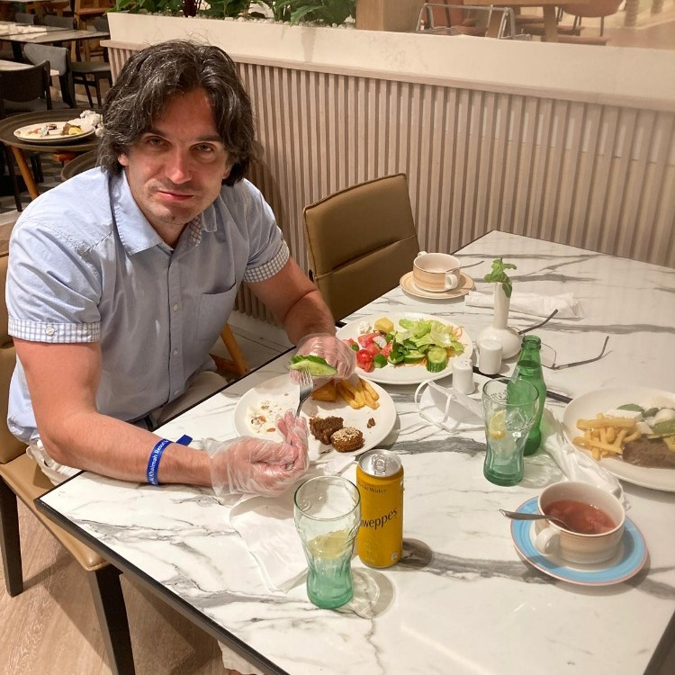
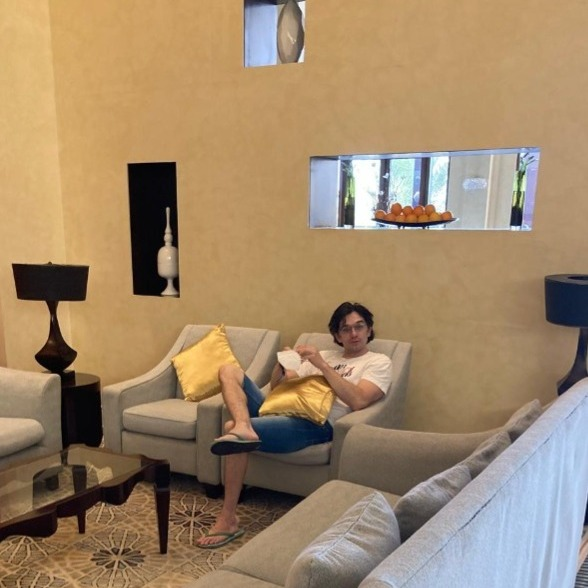
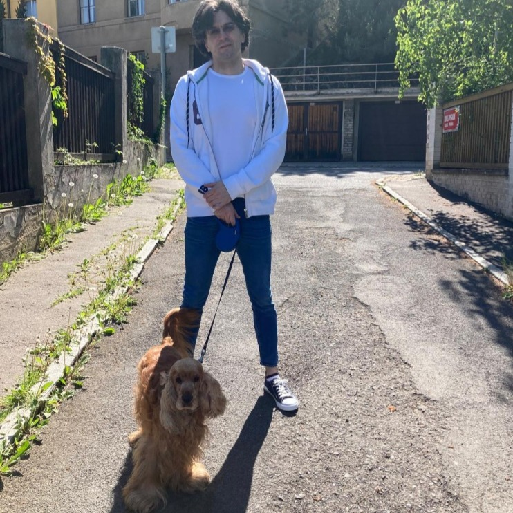
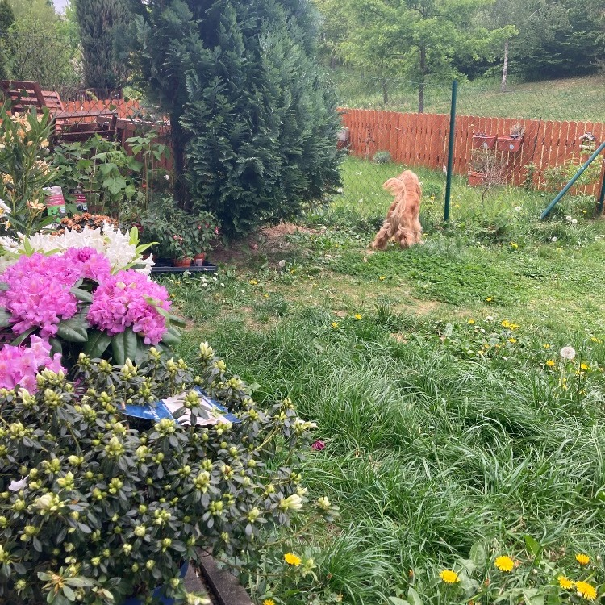
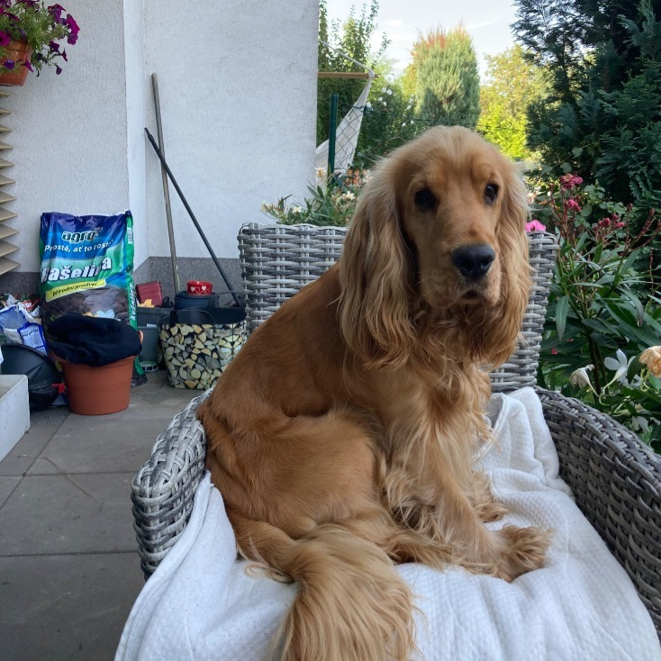
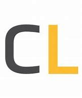
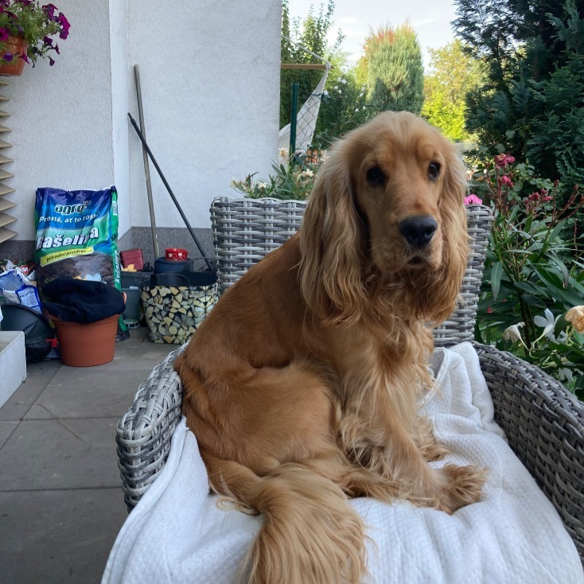
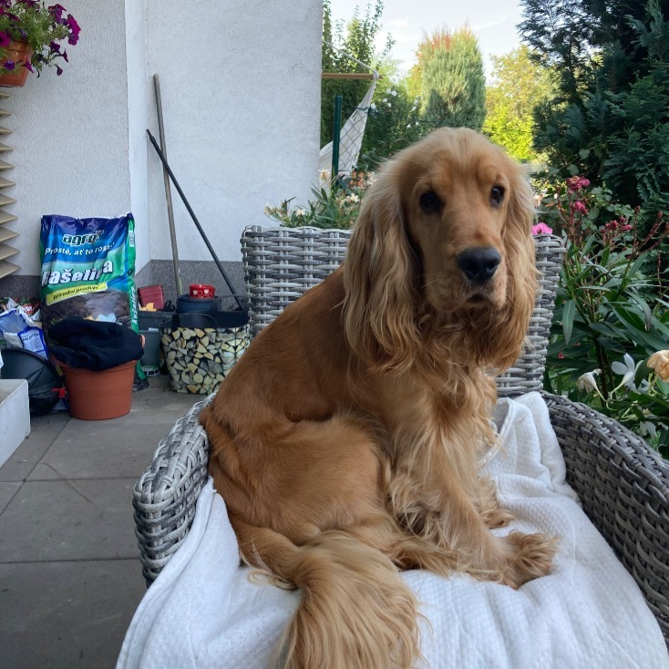

Startujeme! Kdo jsem? Totální extrovert, co žádnou zábavu, miluje život, rodinu a přátele.
V životě jsem zkusil všechno, pracoval jsem v investicích, bankách, jako DJ, moderátor na třech rádiích (uváděl jsem historicky první živé vysílání Radia Černá hora Trutnov), byl jsem člen týmu Marka Hilšera v úspěšných volbách do Senátu v roce 2018.
Vším čím jsem byl, byl jsem rád. Ale už bych se chtěl usadit a pracovat v jednom oboru.
Co mě baví?





Volný čas trávím se svou rodinou, pejskem a ve fitness. Miluju design aut, rád si dám dobré jídlo, poslouchám R&B muziku nebo jen tak bloumám po Praze a fotím si. Taky miluju dobrou kávu a posezení s dobrými přáteli nad problémy celého světa.
Moje budoucnost

Moje budoucnost je pevně svázána s Coders Lab. Vzhledem k tomu, že už mám dost práce na pozicích asistentů, metodiků, referentů, rád bych svoji budoucnost spojil se světem IT. V tomto oboru vidím budoucnost a taky se mně líbí možnost tvořit si projekt podle svého a bude to tedy tvůrčí práce. Proto se během lekcí snažím nasát co nejvíce údajů, znalostí a informací jako houba.
Kontakt
Pocházím z rodiště bratří Čapků, Malých Svatoňovic. Ale práce, osud a láska mě zavály do pražských Hlubočep, kde bydlím.
 
